App Walkthrough
1- Created a Firebase project, added dependencies, and connected the app to Firebase Cloud.
2- Built the base navigation structure for smooth transitions between pages.
3- Implemented login and signup functionality using the MVVM pattern, following a tutorial by Hood
Lab
for managing user data securely.
4- Designed and developed the Home Screen interface.
5- Created a Detail Screen for users to add and manage chores, with Firebase handling all data
storage
and updates.
6- Fetched and displayed the dynamic chores list on the Home Screen.
7- Developed an Onboarding Screen that appears before login/signup as part of the navigation flow.
8- Added an Activity Page featuring bonding ideas and fun suggestions for housemates.
9- Implemented a top navigation bar for easy switching between screens.
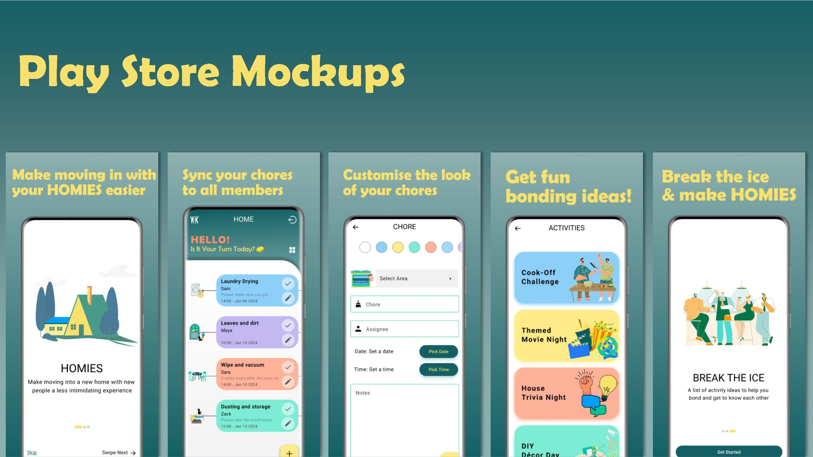
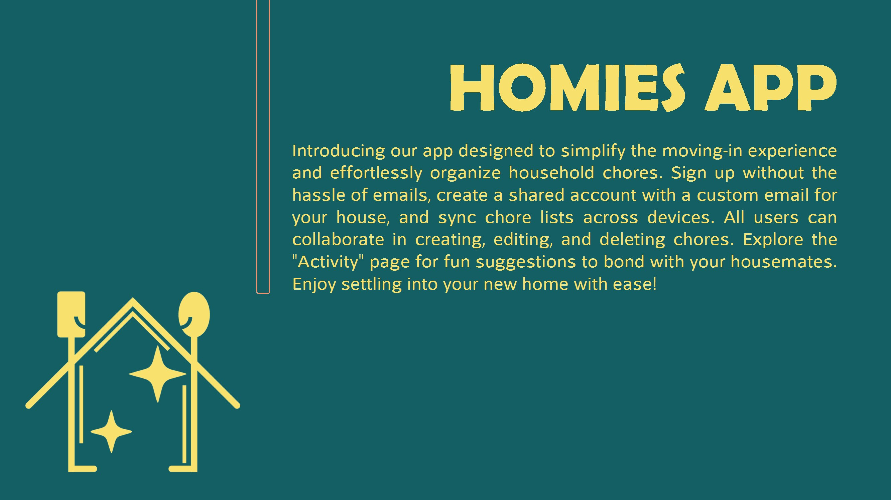
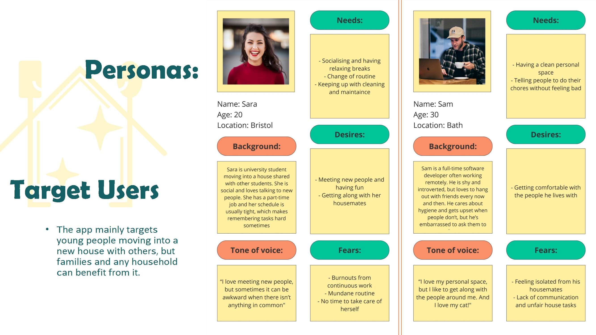
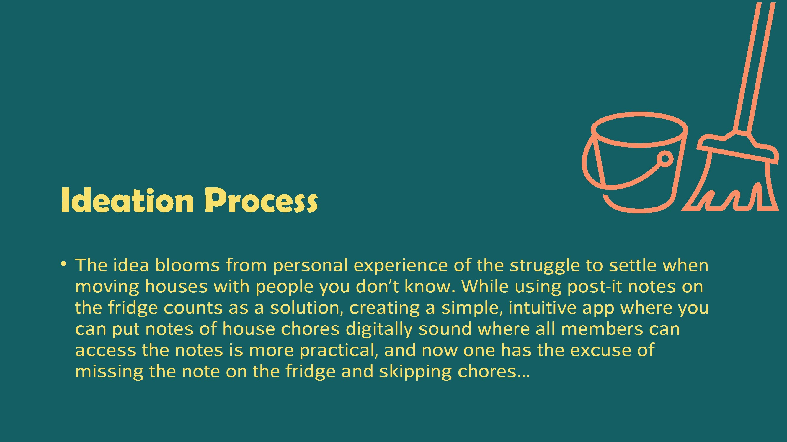
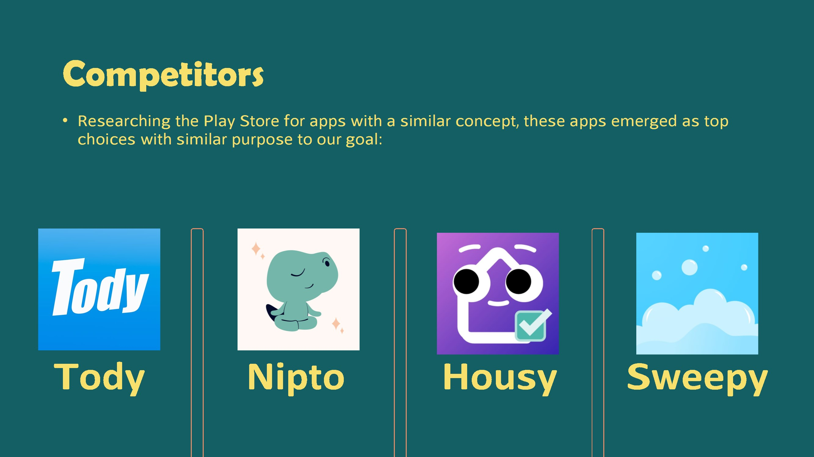
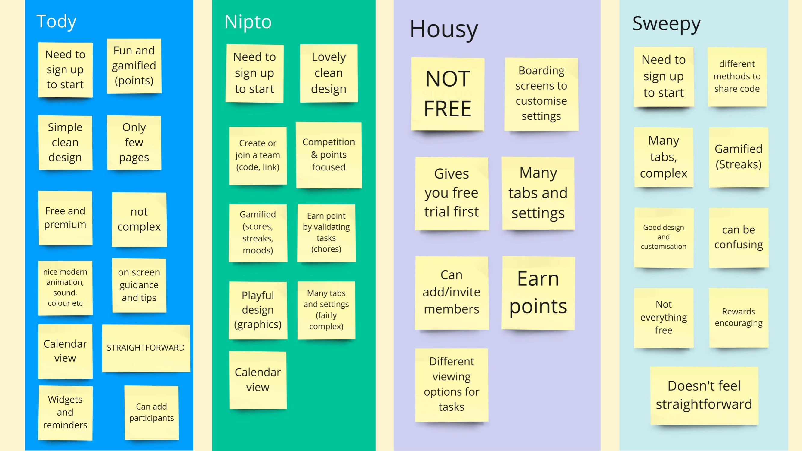
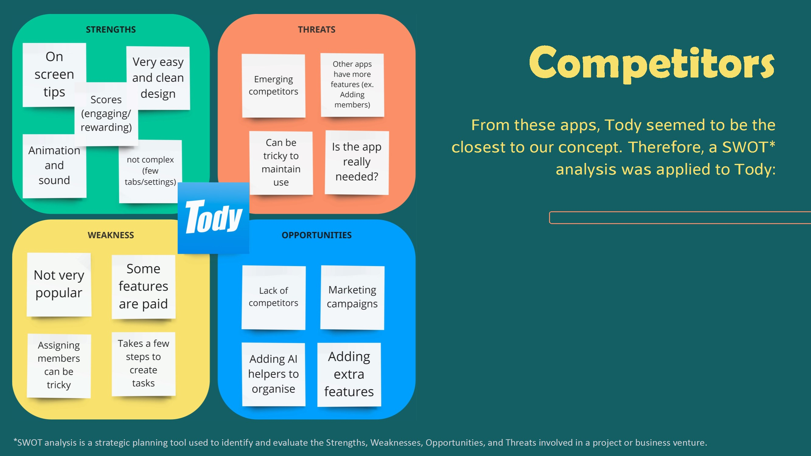
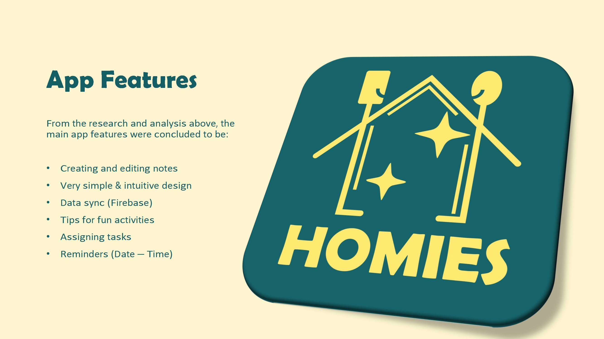
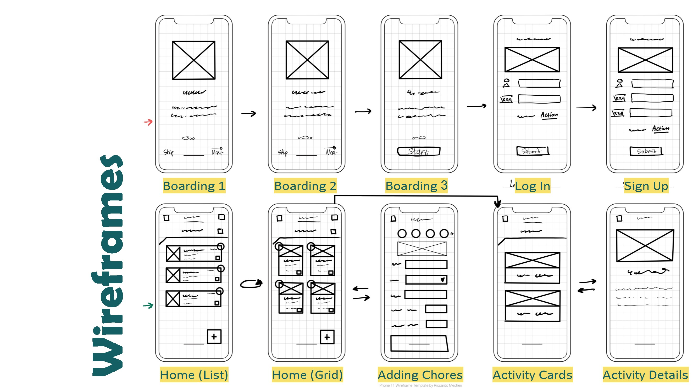
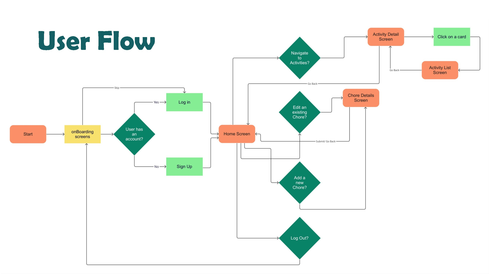
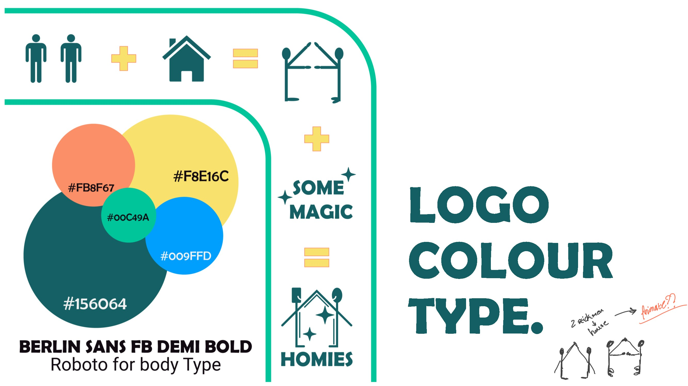
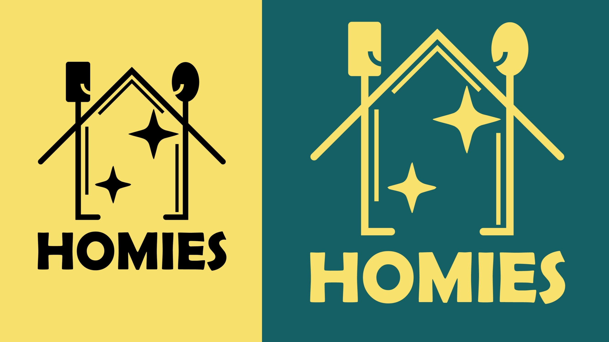
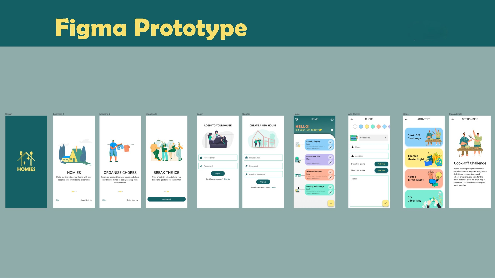